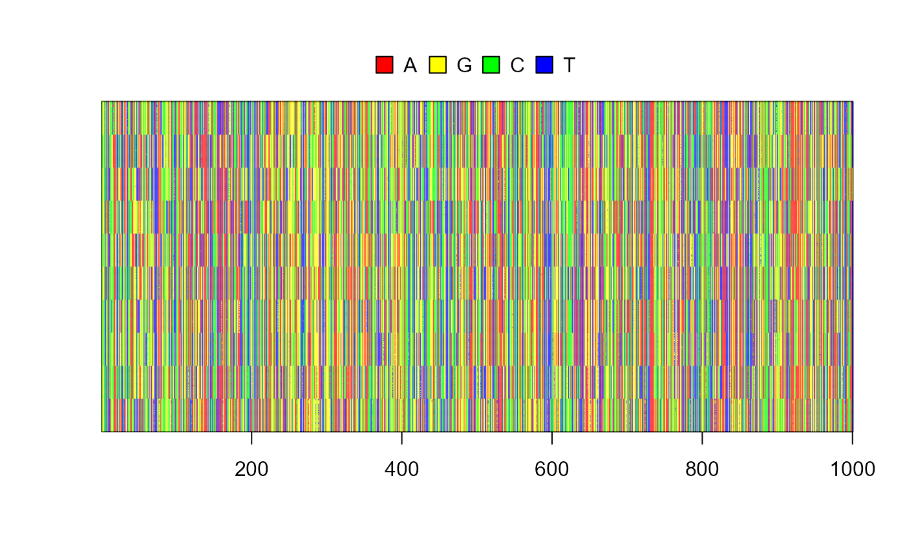

vignettes/simple_nucleotide_example.Rmd
simple_nucleotide_example.Rmd
## set some parameters
seed <- 1205
split_prob <- 0.001
max_subpops <- 10
## specify simulation
split_isolate_sim <- slim_script(
slim_block(initialize(), {
setSeed(!!seed);
## tell SLiM to simulate nucleotides
initializeSLiMOptions(nucleotideBased=T);
initializeAncestralNucleotides(randomNucleotides(1000));
initializeMutationTypeNuc("m1", 0.5, "f", 0.0);
initializeGenomicElementType("g1", m1, 1.0, mmJukesCantor(1e-5));
initializeGenomicElement(g1, 0, 1000 - 1);
initializeRecombinationRate(1e-8);
}),
slim_block(1, {
defineGlobal("curr_subpop", 1);
sim.addSubpop(curr_subpop, 100)
}),
slim_block(1, 10000, late(), {
if(rbinom(1, 1, !!split_prob) == 1) {
## split a subpop
subpop_choose = sample(sim.subpopulations, 1)
curr_subpop = curr_subpop + 1
sim.addSubpopSplit(subpopID = curr_subpop,
size = 100,
sourceSubpop = subpop_choose)
## if too many subpops, remove one randomly
if(size(sim.subpopulations) > !!max_subpops) {
subpop_del = sample(sim.subpopulations, 1)
subpop_del.setSubpopulationSize(0)
}
}
slimr_output_nucleotides(subpops = TRUE, do_every = 100)
}),
slim_block(10000, late(), {
sim.simulationFinished()
})
)
results <- slim_run(split_isolate_sim, throw_error = TRUE)##
##
## Simulation finished with exit status: 0
##
## Success!
res_data <- slim_results_to_data(results)
res_data## # A tibble: 100 × 6
## type expression generation name data subpops
## <chr> <chr> <int> <chr> <list> <list>
## 1 slim_nucleotides slimr_output_nucleotide… 100 seqs <DNAStrnS> <chr>
## 2 slim_nucleotides slimr_output_nucleotide… 200 seqs <DNAStrnS> <chr>
## 3 slim_nucleotides slimr_output_nucleotide… 300 seqs <DNAStrnS> <chr>
## 4 slim_nucleotides slimr_output_nucleotide… 400 seqs <DNAStrnS> <chr>
## 5 slim_nucleotides slimr_output_nucleotide… 500 seqs <DNAStrnS> <chr>
## 6 slim_nucleotides slimr_output_nucleotide… 600 seqs <DNAStrnS> <chr>
## 7 slim_nucleotides slimr_output_nucleotide… 700 seqs <DNAStrnS> <chr>
## 8 slim_nucleotides slimr_output_nucleotide… 800 seqs <DNAStrnS> <chr>
## 9 slim_nucleotides slimr_output_nucleotide… 900 seqs <DNAStrnS> <chr>
## 10 slim_nucleotides slimr_output_nucleotide… 1000 seqs <DNAStrnS> <chr>
## # ℹ 90 more rows
And then we can use some other R packages to quickly build a tree based on the simulated nucleotides, to see if it looks like what we would expect from a sequentially splitting population.
## convert to ape::DNAbin
al <- ape::as.DNAbin(res_data$data[[100]])
dists <- ape::dist.dna(al)
upgma_tree <- ape::as.phylo(hclust(dists, method = "average"))
pal <- paletteer::paletteer_d("RColorBrewer::Paired", 10)
plot(upgma_tree, show.tip.label = FALSE)
ape::tiplabels(pch = 19, col = pal[as.numeric(as.factor(res_data$subpops[[100]]))])